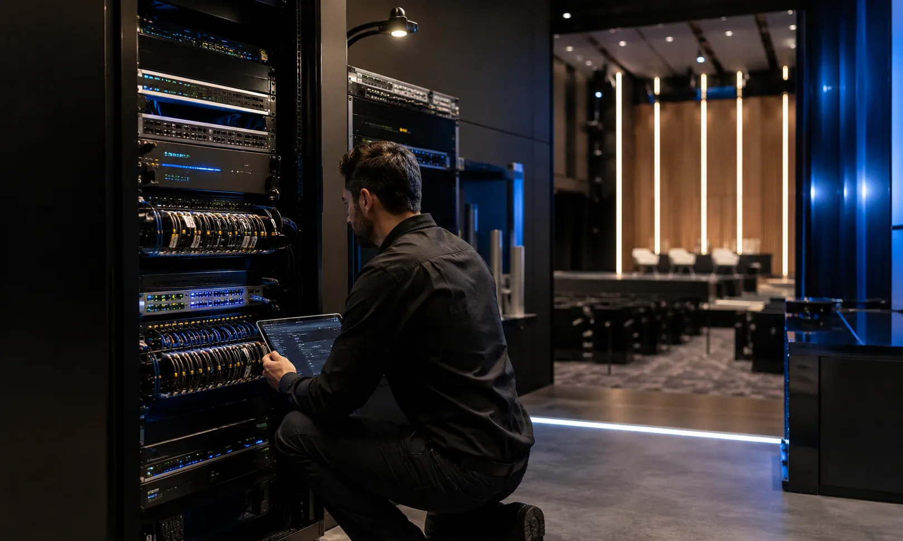
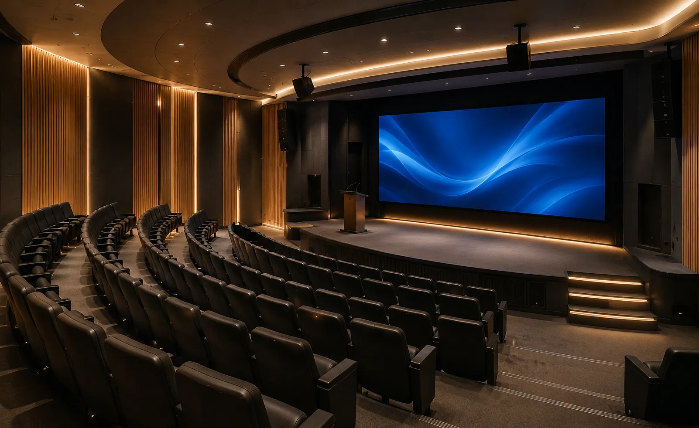
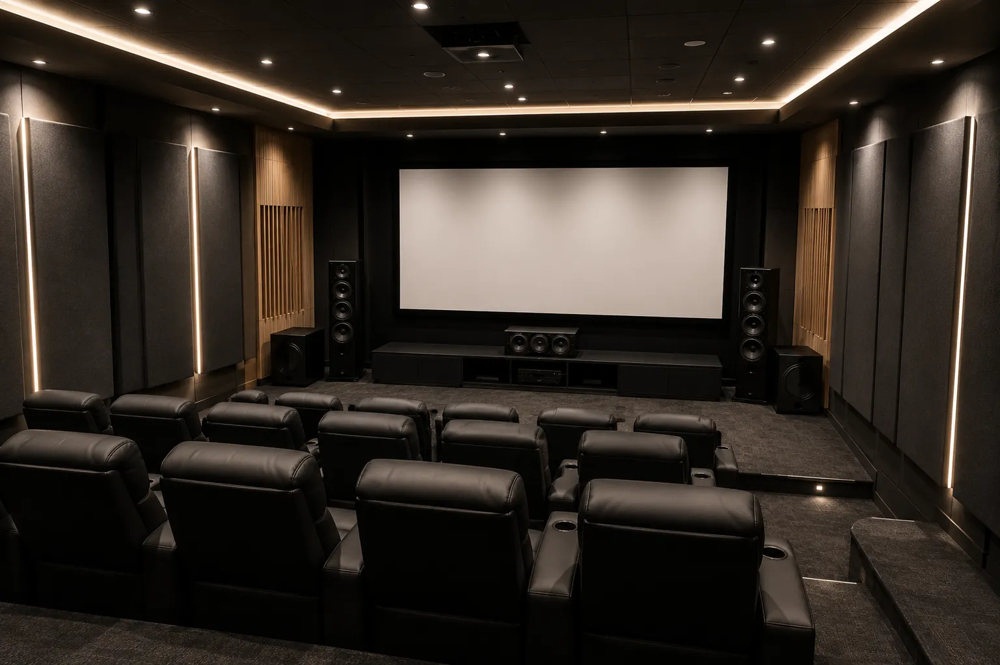
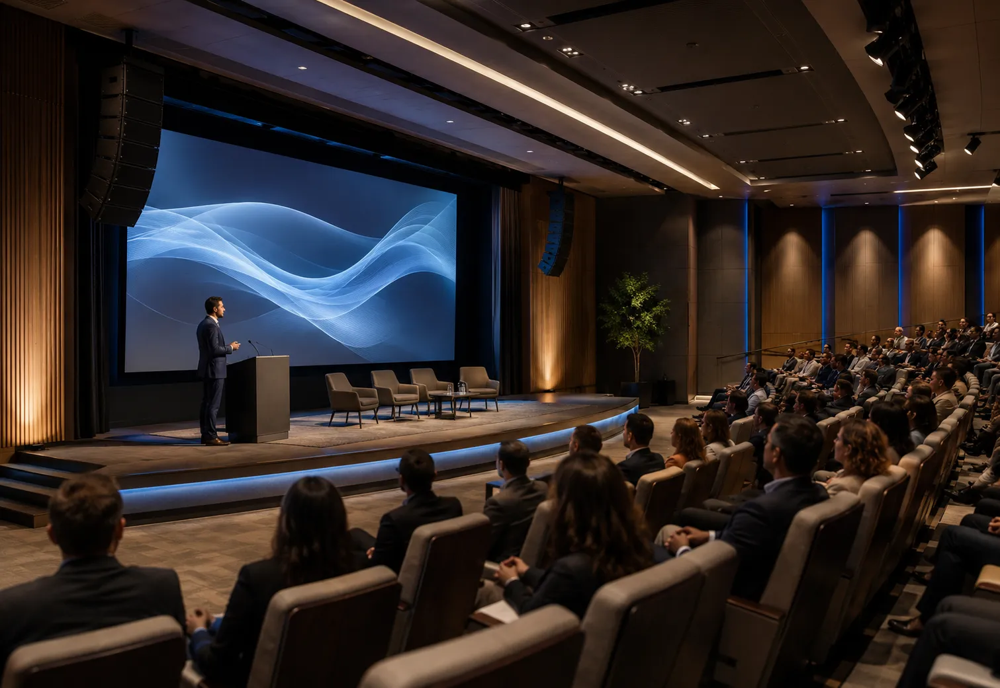

Audio y video para Centros de Culto: voz, música, monitoreo y streaming.
Diseñamos e integramos sistemas para iglesias, templos, auditorios
religiosos y centros de culto.
Antes de seleccionar equipos revisamos dimensiones,
altura, audiencia, ruido, reverberación, cobertura, SPL esperado, escenario, músicos,
microfonía, monitoreo, video, streaming, energía, señal, cableado y operación.
Cuando la voz se entiende, la experiencia cambia
En un centro de culto, el audio debe resolver inteligibilidad de voz, cobertura para la audiencia, dinámica musical, monitoreo y operación. Si el sistema no está bien dimensionado pueden aparecer zonas sin cobertura, falta de margen, retroalimentación, saturación o mezclas difíciles de controlar.
Diseñamos soluciones considerando tamaño y forma del recinto, número de asistentes, altura de montaje, músicos, vocalistas, tipo de servicios, ruido, reverberación, video, transmisión y capacidad del equipo técnico.
Inteligibilidad de voz
Microfonía, procesamiento y refuerzo sonoro definidos según cobertura, distancia, ruido, reverberación y dinámica del orador.
Mezcla y monitoreo
Consola, procesamiento y monitoreo definidos según número de entradas, músicos, vocalistas y necesidades de mezcla.
Visualización adecuada
Pantallas o proyección seleccionadas según distancia, luz, resolución, tamaño del contenido y posiciones de la audiencia.
Streaming y captura
Audio, cámaras, captura y distribución de señal definidos según plataforma, fuentes y flujo de transmisión.
Un sistema mal dimensionado puede limitar la inteligibilidad, la música y la transmisión
Cuando aumenta la asistencia, el número de músicos, canales inalámbricos o necesidades de transmisión, el sistema puede quedar limitado en cobertura, entradas, potencia, monitoreo, radiofrecuencia, video o conectividad.
Nuestro enfoque parte de una revisión técnica: qué equipos pueden reutilizarse, qué limitaciones existen y qué debe dimensionarse. En audio validamos cobertura, SPL, impedancia, potencia, canales, carga y margen de amplificación; en microfonía revisamos cantidad de sistemas y entorno de RF; en video y streaming, fuentes, resolución, señal y conectividad.
Voces poco claras
Selección, ubicación o ganancia incorrectas pueden reducir inteligibilidad y margen antes de retroalimentación.
Monitoreo insuficiente
Una mezcla de monitores insuficiente o mal distribuida puede dificultar que músicos y vocalistas escuchen las referencias necesarias.
Streaming débil
La mezcla para transmisión, las cámaras y la ruta de señal deben diseñarse para el contenido y la plataforma de salida.
Operación confusa
Conexiones improvisadas, ruteo poco claro o demasiados pasos de operación aumentan el riesgo de errores durante el servicio.
Diseñamos el sistema completo para voz, música, video, monitoreo y transmisión.
La solución se define según dimensiones, audiencia, cobertura, SPL esperado, número de entradas, músicos, canales inalámbricos, monitoreo, video, transmisión, infraestructura, operación y posibilidad de crecimiento.
Refuerzo sonoro (Bocinas)
Altavoces, subwoofers cuando aplican, amplificación y procesamiento dimensionados según cobertura, nivel esperado, impedancia, número de canales y margen operativo.
Microfonía especializada
Sistemas de mano, diadema, solapa, instrumentos, coros u otras aplicaciones seleccionados según patrón de captación, movilidad, número de canales y entorno de radiofrecuencia.
Consolas y mezcladoras
Consolas y mezcladoras digitales seleccionadas según número de entradas y salidas, buses de monitoreo, matrices, procesamiento y flujo de operación.
Proyección y video
Pantallas o proyección seleccionadas según tamaño de imagen, distancia, luz ambiental, resolución, contenido y posiciones de la audiencia.
Iluminación escénica
Iluminación funcional o escénica cuando forma parte del alcance, coordinada con escenario, oradores, músicos y necesidades de cámara.
Transmisión y streaming
Cámaras, captura, mezcla de video y distribución de señal seleccionadas según plataforma, encuadres, resolución, fuentes y flujo de transmisión.
De la prédica al streaming: una solución integral
Podemos integrar microfonía, consola, altavoces, monitoreo, cámaras, pantallas, proyección, captura, distribución de señal, cableado y capacitación básica de acuerdo con el alcance del proyecto.

Templos y capillas
Salas de reuniones
Salones multipropósito Aulas y capacitación
Aulas y capacitación
 Auditorios principales
Auditorios principales

Sistemas exteriores
Actualiza el sistema aprovechando lo que todavía sea técnicamente útil
Si el templo o auditorio ya cuenta con equipos, podemos revisar altavoces, amplificación, procesamiento, consola, microfonía, monitores, video, red y cableado para determinar qué conviene conservar, reconfigurar, ampliar o sustituir antes de invertir en nuevos componentes.
Cotizar actualización por WhatsAppUn proceso claro para dimensionar e integrar tu sistema audiovisual
Un proceso estructurado para definir uso, cobertura, potencia, microfonía, monitoreo, video, streaming, cableado, equipos e instalación antes de cerrar el proyecto.
Entendemos el uso
Revisamos servicios, prédica, música, asistentes, músicos, streaming, video, equipo técnico y necesidades actuales.
Revisamos el espacio
Consideramos dimensiones, altura, ruido, reverberación, cobertura, escenario, cabina, energía, red, cableado y posiciones de pantalla.
Diseñamos la solución
Definimos cobertura, altavoces, amplificación, carga, potencia, margen, microfonía, mezcla, monitoreo, video, proyección, streaming y accesorios.
Cotización formal
Te entregamos alcance, equipos, servicios, tiempos, supuestos, exclusiones y pendientes técnicos por confirmar.
Integración
Realizamos suministro, montaje, cableado, conexión, configuración, pruebas y puesta en marcha conforme al alcance aprobado.
Capacitación
Realizamos ajustes finales y capacitación básica para el personal responsable de mezcla, microfonía, monitoreo y transmisión.
No seleccionamos equipos aislados: dimensionamos el sistema audiovisual completo del recinto
Un sistema para centros de culto requiere considerar geometría, cobertura, SPL esperado, reverberación, microfonía, mezcla, monitoreo, radiofrecuencia, video, streaming, cableado, alimentación y capacidad de crecimiento.
Nuestro enfoque coordina microfonía, refuerzo sonoro, monitoreo, video, streaming y control como un solo sistema, con criterios de compatibilidad, mantenimiento y operación.
Tecnología profesional para voz, música y transmisión
- Levantamiento y definición del alcance
- Dimensionamiento técnico del sistema
- Equipos originales y tecnología profesional
- Instalación y cableado según proyecto
- Integración de audio, video y streaming
- Pruebas, ajustes y capacitación básica
- Soporte y ampliación según alcance
Marcas profesionales para soluciones de alto rendimiento
Seleccionamos tecnología profesional según cobertura, potencia, radiofrecuencia, mezcla, monitoreo, video, conectividad, compatibilidad y presupuesto del proyecto.
Dudas comunes antes de equipar un Centro de Culto
Estas son algunas de las variables que revisamos antes de definir el alcance técnico y la cotización.
Diseñemos tu proyecto de Templo o Auditorio
Compártenos medidas, asistentes, músicos, audio, video, streaming, equipos existentes y etapa del proyecto para revisar el alcance técnico.
Equipemos tu
Centro de Culto
Podemos orientarte sobre PA, altavoces, subwoofers, amplificación, consolas, microfonía, monitoreo, pantallas, proyección, video, streaming y actualización del sistema existente.
Solicita asesoría para tu centro de culto
Completa el formulario y se abrirá WhatsApp con la información estructurada. Incluye medidas, altura, asistentes, músicos, sistema actual y necesidades de audio, video o streaming cuando las conozcas.